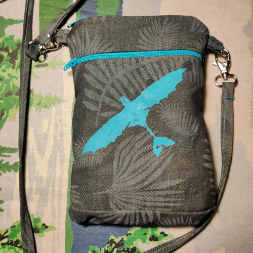
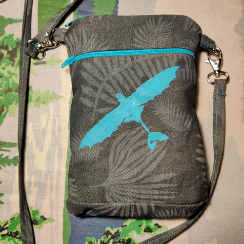
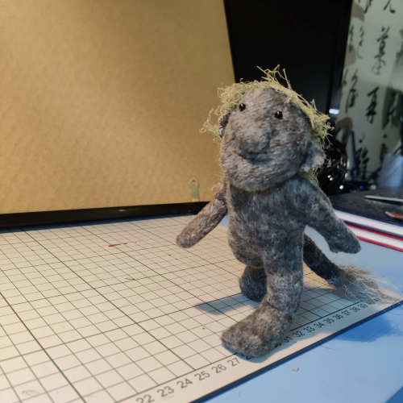
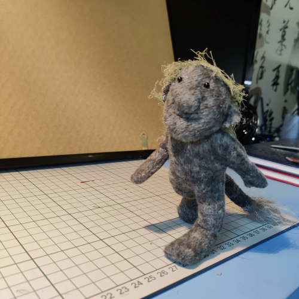

 


Ompelu on minulle rakas harrastus, joka on välillä aktiivinen ja välillä tauolla. Viime aikoina intoani on kasvattanut erityisesti saumurin hankinta, mutta valitettavasti aikaa sille on ollut niukasti tarjolla. Suunnitelmiani on paljon, mutta ajan ja innon yhdistäminen projekteihin on haasteellista. Välillä huomaan innostuvani tekemään jotain, mutta aikaa ei ole tarpeeksi. Toisinaan taas, kun olisi aikaa, innostus ei olekaan läsnä. Haasteena on myös tilan puute nelihenkisessä perheessä. Keittiön pöytä on ainoa paikka, missä voin ompelua harrastaa, ja sekin pitäisi valmistella erikseen.
Ompelen mielelläni sekä vaatteita itselleni ja lapsille että erilaisia pehmoleluja, pussukoita ja omia kokeiluprojekteja. Jokainen ompeluprojekti on oppimisen paikka, ja haaveissani onkin hankkia kunnon ompelukone ja toinen saumuri. Toivon, että tulevaisuudessa löydän tasapainon ajan ja innon välillä, jotta voisin toteuttaa kaikki suunnitelmani ja kääntää hankitut kankaat kauniiksi luomuksiksi. Ompeluharrastuksessa on vielä paljon opittavaa, mutta uskon, että löydän oman rytmini ja saan toteutettua kaikki ideani ajan myötä.
Mutta jos tämä ei olisi pelkkä kertomusta niin näytetään suunnitelmia, mitä on kesken ja mitä valmiina. Jospa joskus taulukko olisi tasapainossa :D Alla on kaksi taulukkoa
| Suunnitelmissa | Aloitettu |
|---|---|
| Collegehousut | Sporttimekko |
| Legginsit | Essu |
| Pojan Collegehousut | Tytön yksisarvis toppi |
| Sporttipaita | Kaksi Kissa-pehmoa |
| Teltta | |
| Kesämekko |
| Ompelemani Vaatteet: | Pehmolelut: | Käyttötavara: | Omat Kokeilut: |
|---|---|---|---|
| Hulmuhelmamekko | Kissa-pehmo | Kännykkäpussi | 1:12 & 1:6 tilkkupeitto |
| Pikachu-huppari | Peikko | 1:12 & 1:6 tyyny | |
| Kettu-toppi | |||
| Perhos-mekko | |||
| Koikarppi-mekko | |||
| Susi-toppi |